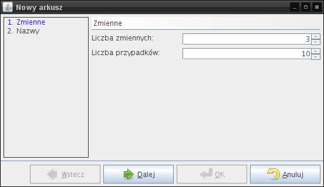
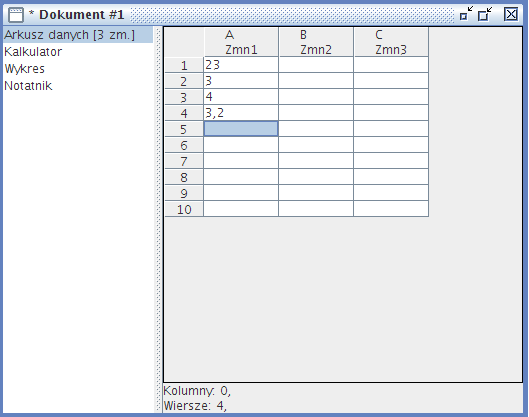
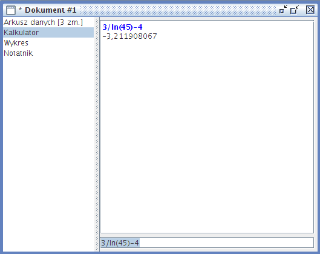

Moduły są różnymi częściami programu, jakie można wstawiać do dokumentu. Tworzą jego podstrony. W JStat można na obecnym etapie rozwoju wybrać kilka, a dzięki przyszłościowo zaprojektowanemu interfejsowi programistycznemu rozszerzenie o kolejne rodzaje modułów jest proste.
Wstawienie arkusza do dokumentu następuje poprzez wybranie z menu Wstaw pozycji Arkusz. Otworzy się kreator wstawienia nowego arkusza.
|  |
W pierwszym kroku można wybrać liczbę zmiennych, które są reprezentowane przez kolumny arkusza, oraz liczbę przypadków reprezentowaną ilością wierszy.
W drugim kroku należy wprowadzić nazwy zmiennych. Można również zostawić domyślnie zaproponowane. Aby przycisk OK był aktywny, ilość wprowadzonych zmiennych musi się równać ilości zadeklarowanej w pierwszym kroku. Jeśli zajdzie potrzeba, można się cofnąć za pomocą przycisku Wstecz i skorygować wartość.
|  |
Wprowadzanie danych do kolejnych komórek arkusza można rozpocząć po dwukrotnym kliknięciu lewym przyciskiem myszy na wybranej komórce. Alternatywnym sposobem jest wybór komórki używając lewego przycisku myszy lub klawiszy kursora na klawiaturze (strzałek) i wciśnięcie na klawiaturze klawisza F2.
Obecna wersja JStat pozwala wprowadzać do arkusza jedynie liczby.
Kliknięcie prawym przyciskiem myszy na arkusz spowoduje wyświetlenie menu kontekstowego.
Dostępne do wyboru opcje są podzielone na dwie grupy
operacji typu kopiuj-wytnij-wklej.
Pierwszą jest grupa umożliwiająca swobodną wymianę
tekstu z innymi programami, np. arkuszami kalkulacyjnymi,
ponieważ kopiowany tekst do schowka ma standardowy format
wykorzystywany do przenoszenia zawartości tabel. Używając
kombinacji klawiszy CTRL-C można ponadto skopiować bądź
wyciąć zaznaczone komórki i wkleić w innym miejscu
po naciśnięciu CTRL-V.
Druga grupa umożliwia operacje
na tekście przechowywanym w postaci używanej
przez macierze,
tzn. skopiowanie zaznaczonej części arkusza
spowoduje wstawienie tekstu do schowka
rozpoczynającego i kończącego się odpowiednim nawiasem klamrowym,
każdy wiersz będzie również ograniczony przez
nawiasy klamrowe, a poszczególne elementy wiersza
będą oddzielone średnikami.
Dzięki drugiej grupie łatwo jest przenieść część
danych np. do modułu kalkulatora,
wykonać na nich pewne operacje, a następnie wkleić je
z powrotem do arkusza.
Jednym z pomysłów rozwoju programu jest rozwój modułu arkusza o obsługę formuł, znaną z "normalnych" arkuszy kalkulacyjnych, takich jak OpenOffice Calc oraz Microsoft Excel. Substytutem formuł może być odpowiednia obsługa kopiowania i wklejania danych z zewnętrznego programu lub Edytor funkcji.
Po uzupełnieniu wszystkich komórek arkusza można wykonywać różne obliczenia, opisane szerzej w rozdziale o obliczeniach.
Kalkulator można otworzyć wybierając z menu Wstaw pozycję Kalkulator. Do dokumentu zostanie dodana strona z kalkulatorem. Jest to zaawansowany kalkulator z dodatkowymi funkcjami (opisane w osobnym rozdziale), przestrzegający kolejności działań.
|  |
Okno kalkulatora składa się z:
Wpisanie wyrażenia polega na wpisaniu działania, np.
2+2*2 i naciśnięciu klawisza ENTER. W górnym
polu pojawią się dwie linie. Pierwsza, wyróżniona niebieską czcionką,
oznacza dane wpisane przez użytkownika. Druga prezentuje wynik obliczeń.
Błędy są wyróżniane na czerwono, np. po wpisaniu działania
1/0 zostanie wypisany błąd o niemożliwości obliczenia.
Wykaz wszystkich funkcji wraz z wymaganymi parametrami jest dostępny poprzez Edytor funkcji. W przypadku tego modułu nie ma znaczenia wielkość liter, oraz rodzaj użytego separatora dziesiętnego liczb.
Wykres do dokumentu można wstawić wybierając z menu Wstaw pozycję Wykres.
Okno wykresu składa się z:
Wpisanie wyrażenia polega na wpisaniu działania, np.
x^2 i naciśnięciu klawisza ENTER.
Wykres jest rysowany w ten sposób, że za zmienną x
zostają kolejno podstawiane wartości (cały widoczny zakres osi OX),
a obliczona wartość (odpowiadająca współrzędnej na osi OY)
zostaje zaznaczana na wykresie. W przypadku wyrażeń, które
są nieoznaczone dla pewnych x, wykres nie jest rysowany
w przedziale, dla których wyrażenie nie ma wartości. Np.
wpisanie wyrażenia oznaczającego logarytm naturalny ln(x)
i potwierdzenie klawiszem ENTER spowoduje wykreślenie
wykresu jedynie dla dodatnich liczb rzeczywistych.
Wykaz wszystkich funkcji wraz z wymaganymi parametrami jest dostępny poprzez Edytor funkcji. W przypadku tego modułu nie ma znaczenia wielkość liter, oraz rodzaj użytego separatora dziesiętnego liczb.
Wykres można skalować i przesuwać.
Przesuwanie obszaru kreślenia następuje przez przyciśnięcie lewego klawisza myszy i przesunięcie kursora myszy (nie puszczając przycisku). Podczas przesuwania widać jedynie osie wykresu. Gdy osie nie mieszczą się w obszarze rysowania, na odpowiedniej krawędzi "przyklejają" się liczby z osi ułatwiając orientację w układzie współrzędnych. Po puszczeniu przycisku myszki wykres zostaje odrysowany. Opóźnienie przerysowania podyktowane jest tym, że nieustanne rysowanie wykresu, a więc obliczanie zazwyczaj kilkuset wyrażeń, jest dość czasochłonnym zadaniem.
Przesuwanie - tryb "podróżnika". Tryb ten jest uaktywniany w przypadku kliknięcia na obszar wykresu z jednoczesnym przytrzymaniem na klawiaturze przycisku SHIFT. Następnie nie jest wymagany ruch kursorem. Wykres zostaje powoli przesunięty w stronę kursora myszki, tzn. kliknięcie na prawą stronę powoduje przesunięcie obszaru rysowania w prawo, tak że widać większe wartości na osi OX. Wykres będzie się przesuwał do momentu, w którym nie zostanie zwolniony lewy przycisk myszki. Dodatkowo będzie się przesuwał tym szybciej, im dalsza jest pozycja kursora myszy od centralnego punktu obszaru kreślenia wykresu.
Skalowanie wykresu - za pomocą myszy wyposażonej w kółko (scroll) jest możliwe szybkie skalowanie wykresu. Obrócenie kółkiem myszy w górę spowoduje przybliżenie wykresu, natomiast przesunięcie kółkiem myszy w dół spowoduje oddalenie wykresu. Wykres zostaje przybliżany i oddalany względem centralnego punktu na obszarze kreślenia, niezależnie od pozycji kursora myszy (wymagane jest, by znajdował się nad polem służącym do narysowania wykresu).
Skalowanie - niezależne. Skalowanie wykresu można dokonać niezależnie dla każdej osi. Tzn. jednostka na osi np. OX może odpowiadać (wizualnie) kilku jednostkom osi OY. Skalowanie wykresu następuje przez wykonanie czynności:
Eksport - eksportuje bieżący wynik do pliku graficznego. Po wybraniu tej pozycji zostanie otwarty dialog, pozwalający podać, jaki rozmiar (rozdzielczość) obrazka stworzyć. Im większy, tym większy rozmiar pliku, ale również większa czytelność. Wykresy przeznaczone do druku powinny być jak jak największe, aby zachować ich dobrą jakość. Z drugiej strony większy rozmiar wykresu pociąga za sobą większy rozmiar pliku, więc się nie nadaje do publikacji w internecie. Stosowany format zapisu danych (PNG, ang. Portable Network Graphics) jest bezstratnym skompresowanym formatem zapisu. Obok plików JPEG jest uznany za standard i jest bez problemu odczytywany przez współczesne programy graficzne oraz przeglądarki internetowe.
Notatnik do dokumentu można wstawić wybierając z menu Wstaw pozycję Notatnik. Notatnik to jedno pole tekstowe i, jak sama nazwa wskazuje, służy do dodawania własnych notatek do dokumentów.
Skrypt do dokumentu można wstawić wybierając z menu Wstaw pozycję Skrypt.
Okno edycji skryptu jest podzielone na:
print().Np. po wpisaniu do edytora (środkowe pole) poleceń:
print("przykład");
print("druga linijka");
następnie wybraniu z paska narzędziowego polecenia Uruchom,
w konsoli wyjściowej powinien się pojawić wynik działania
skryptu, tj. dwie linie:przykład druga linijka
Wyczyszczenie konsoli wyjściowej następuje poprzez wybranie polecenia Wyczyść konsolę z paska narzędziowego. Konsola jest czyszczona także każdorazowo przed uruchomieniem skryptu.
Więcej informacji o skryptach znajduje się w osobnym rozdziale poświęconym skryptom.
Narzędzia są dodatkowymi funkcjami programu, które nie są niezbędne do używania aplikacji, ani nawet do jej istnienia, lecz znacznie ją ułatwiają korzystanie z JStat.
Edytor funkcji można otworzyć wybierając z menu Narzędzia pozycję Edytor funkcji.
Okienko edytora składa się z czterech części. Po lewej stronie znajduje się lista wszystkich funkcji. Po prawej, w górnej części jest pomoc do aktualnie wybranej funkcji z listy. Poniżej pomocy są dynamicznie zmieniające się pola do wprowadzania argumentów funkcji, podgląd wyrażenia, jakie zostanie obliczone, oraz wynik. W dolnej części umieszczone są przyciski umożliwiające: